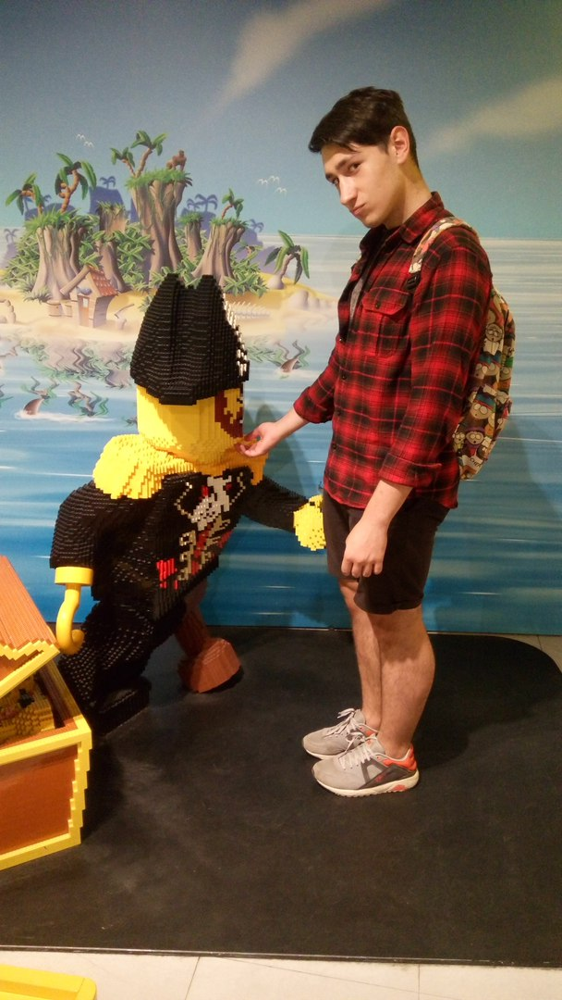
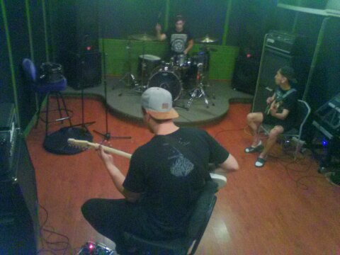
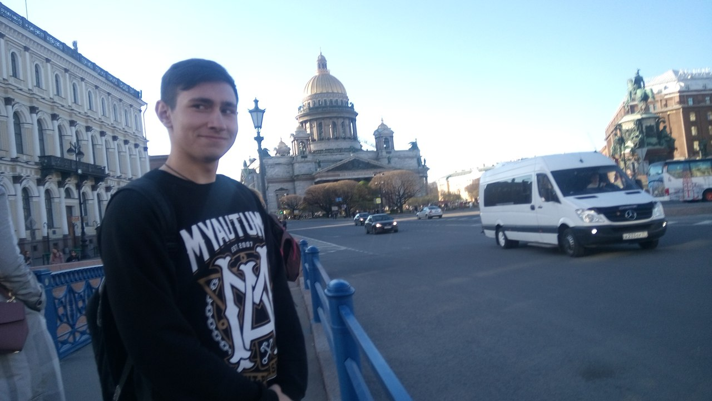
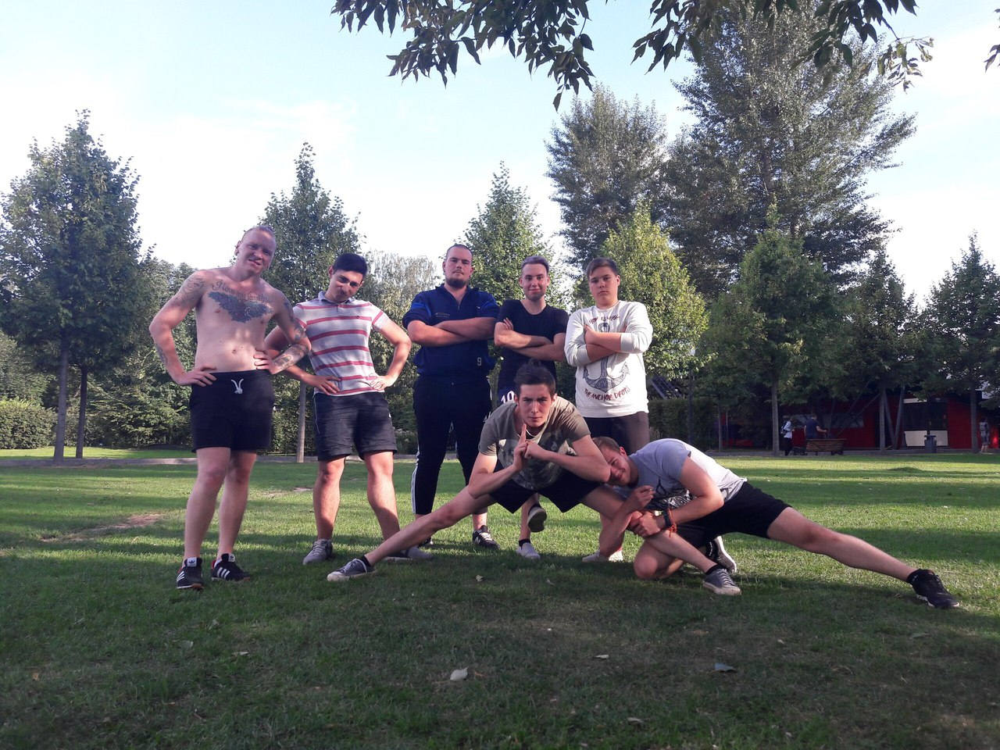
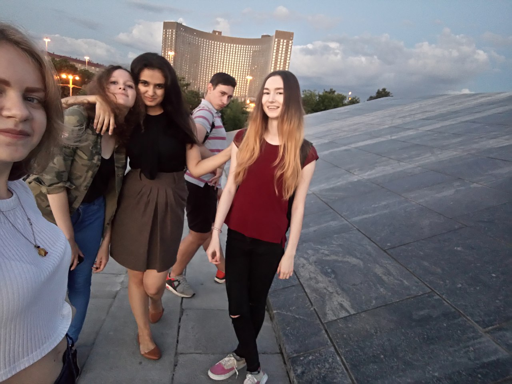
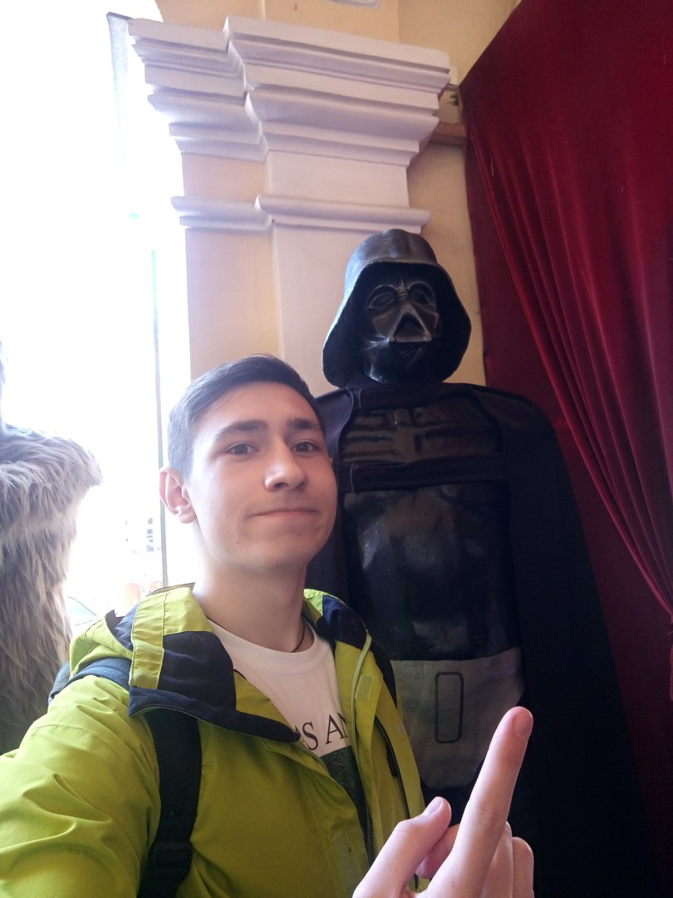
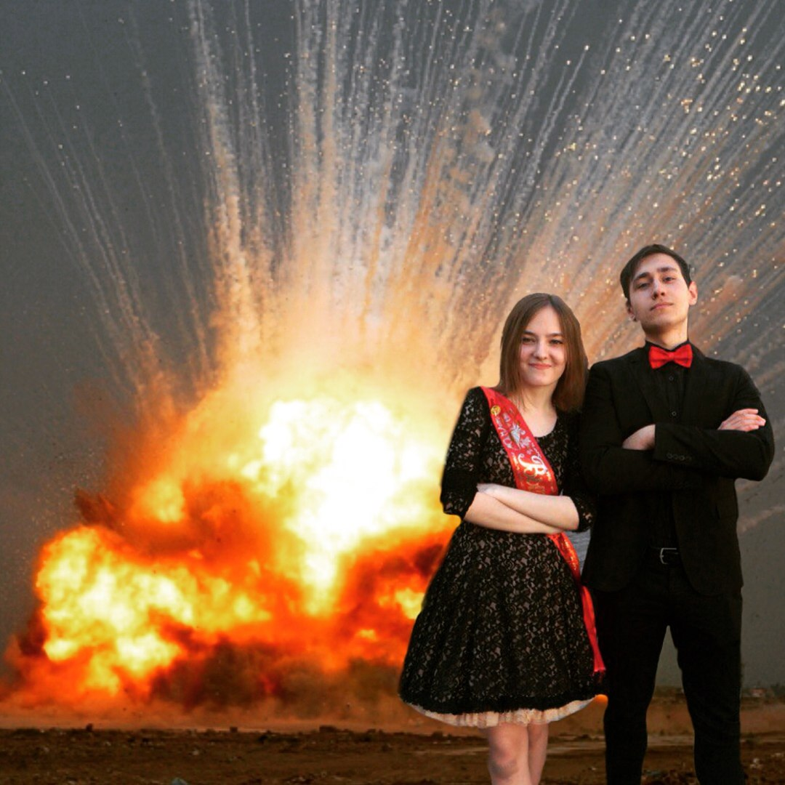

Это лето было очень насыщенным. Я побывал в северной столице России - Санкт-Петербурге.
Так же основал свою музыкальную группу с очень крутыми ребятами в составе.
Успел погладить за бороду пирата из лего, а так же перейти на сторону тьмы, потому что там есть печеньки.
Начал гулять больше, чем делал это когда-либо. Приобрел много новых и друзей.